I was inspired to make this based on previous difficulty dividing chores between
roommates and monitoring whose turn it was to buy more supplies. Our household group
chat frequently asked: "Whose dishes are in the sink and can someone clean them?" or
"Hey, I've been waiting to dry my clothes for 3 hours...". These passive-aggressive
type messages created a negative atmosphere in the house when people did not want to
take responsibility for chores. This iOS app prototype is a one-stop solution for keeping
a shared house or apartment tidy. Within the app, you can assign chores to roommates and
monitor household supply usage. The app holds roommates accountable for their share of
the household work, meaning that everyone pitches in and the house stays clean! I designed
this iOS app prototype using Sketch and design tools such as Canva, FontPair, and Coolors.
This was my first time working with Sketch, but I plan on revising this prototype after
studying the software more carefully. In the future, I plan to make this app fully functional
using Swift on Xcode, and add more features. The first feature I will add is a way to
manage the money used for household goods within the app, either by monitoring individuals'
expenses or creating a household fund where everyone can pitch in. Another feature will
be adding different ways to assign chores, such as with a random generator, or by each
person selecting the chores they want to do. I will also add options to further customize
profiles and color schemes.
 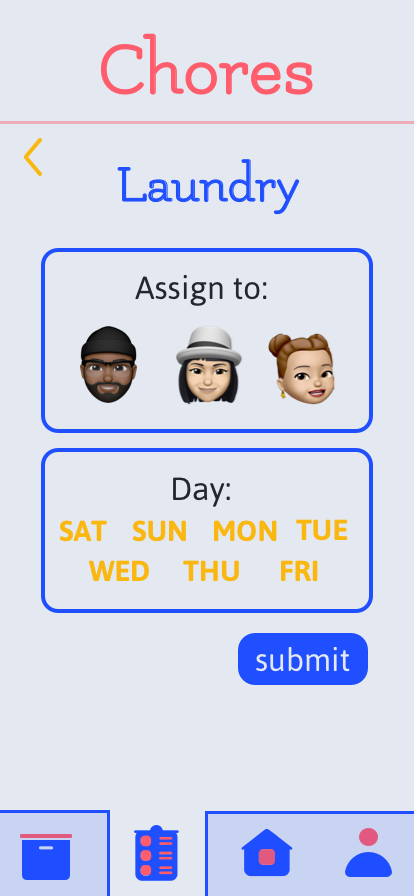
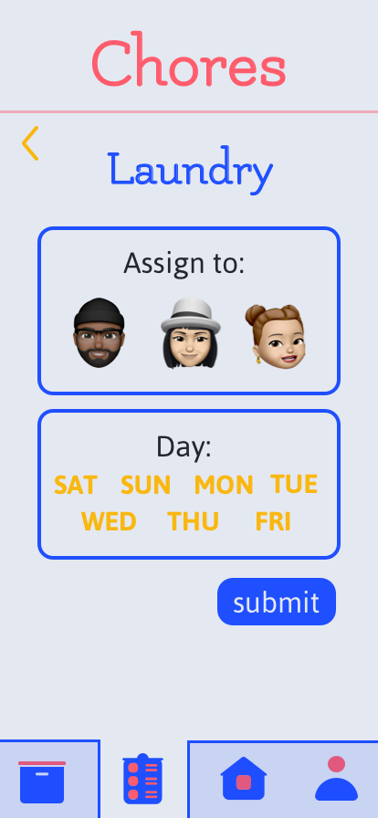
 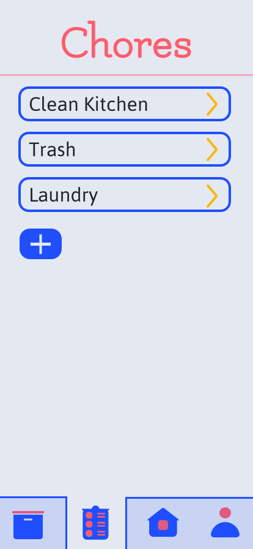
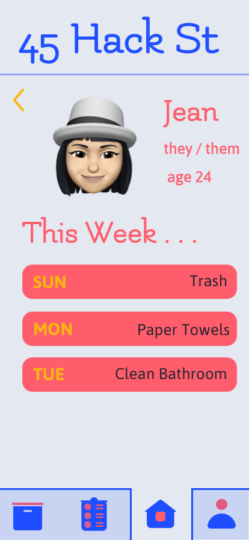
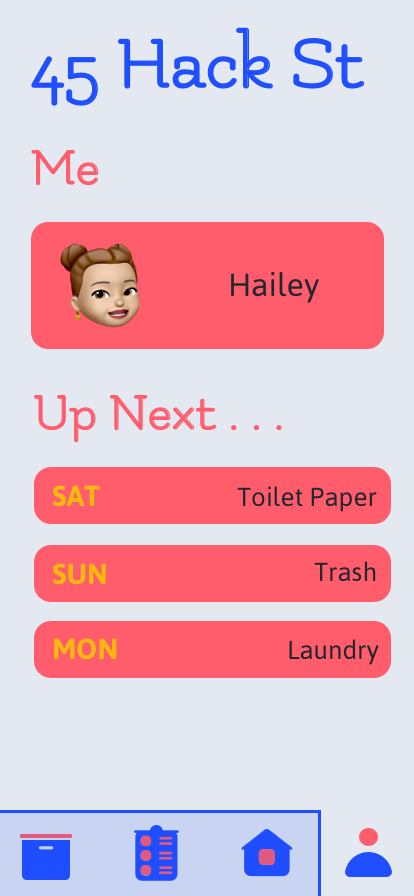
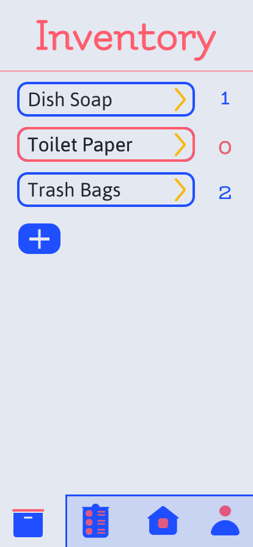
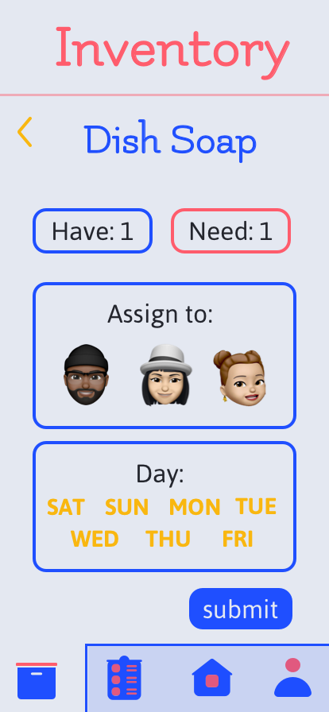
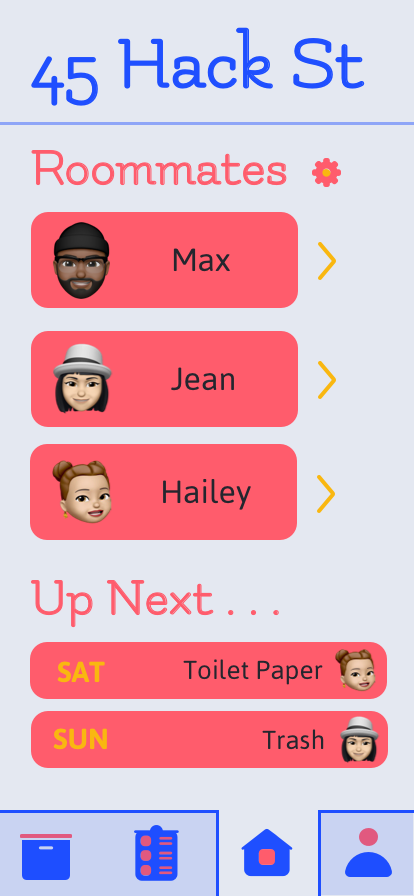
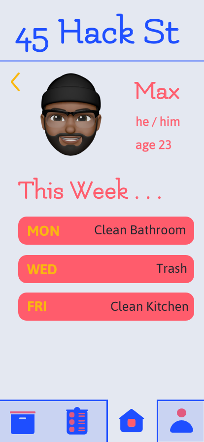
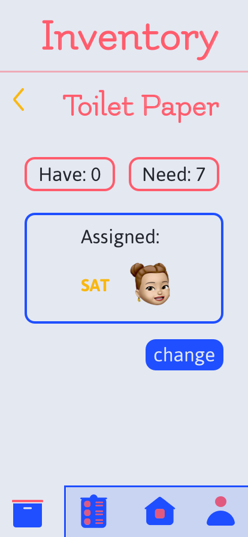
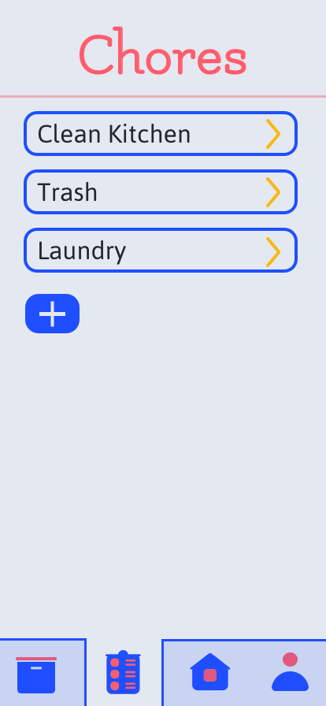
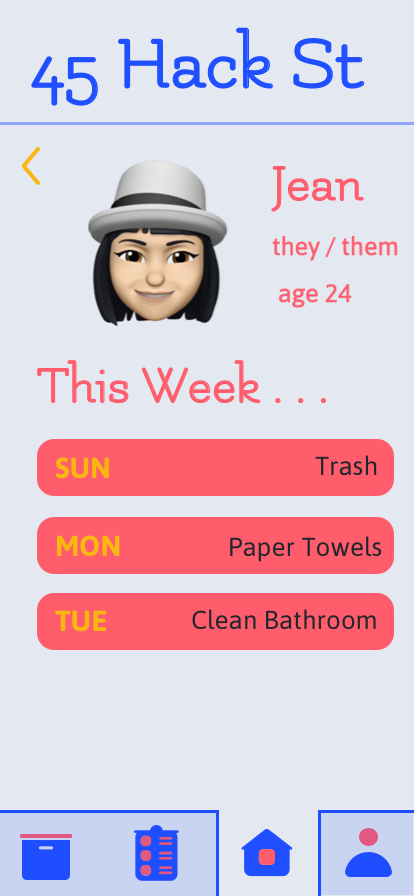
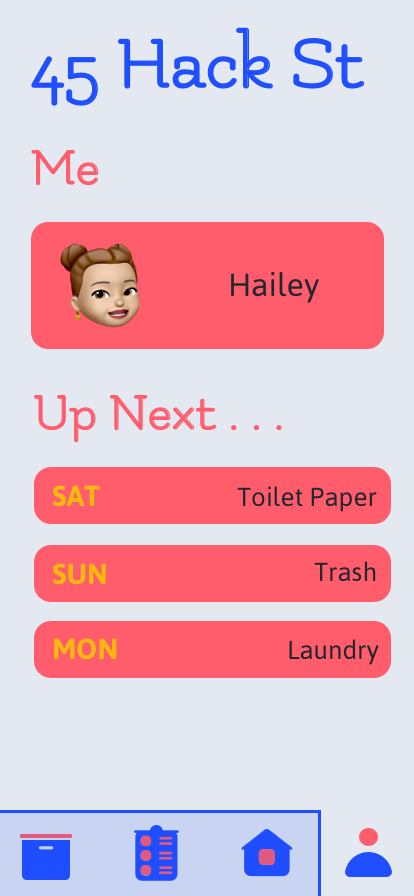
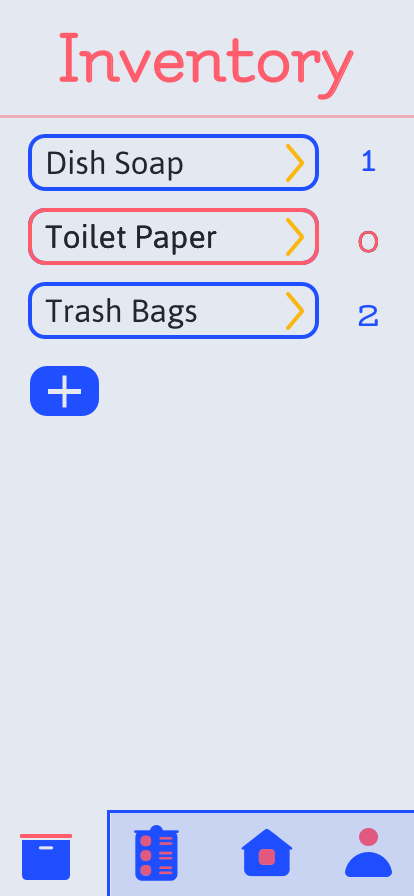
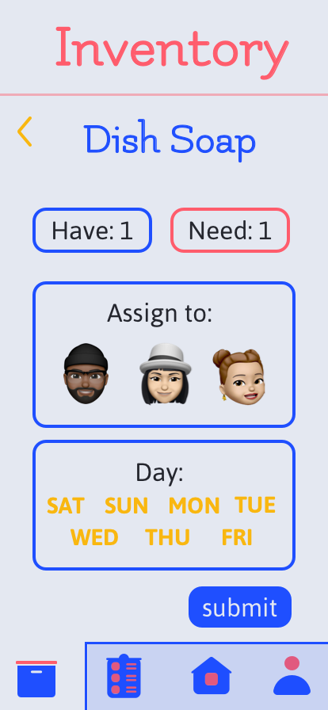
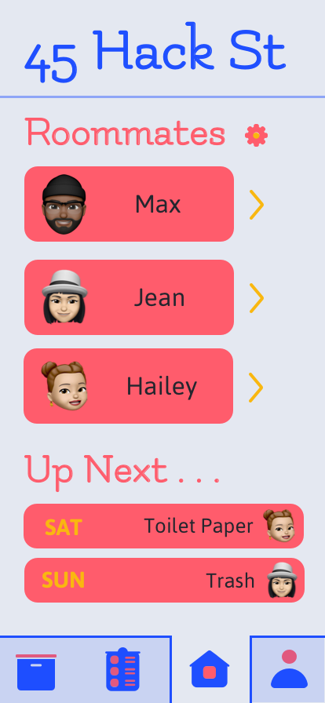
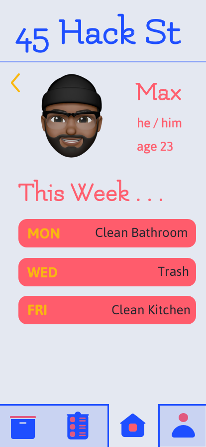
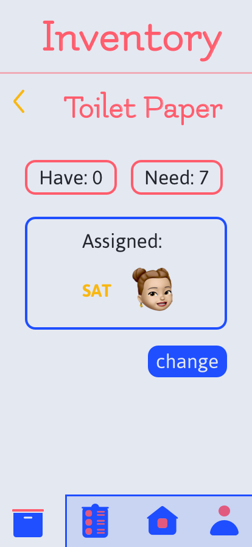
 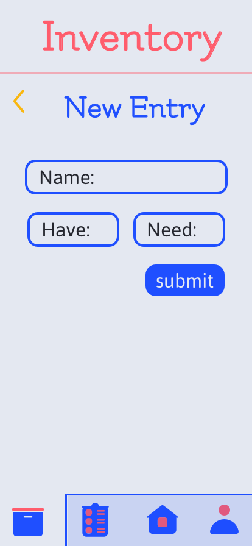
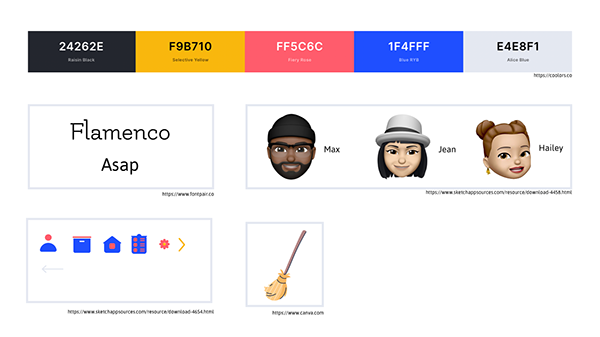
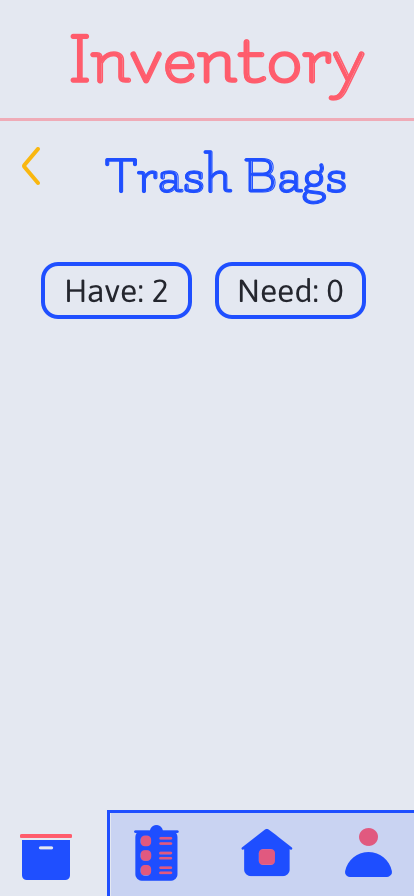
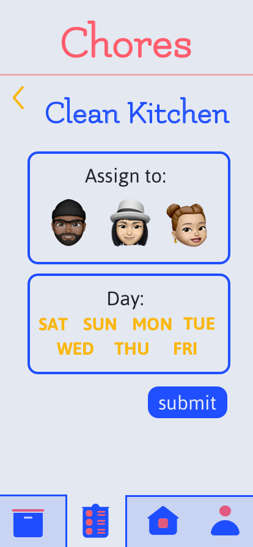
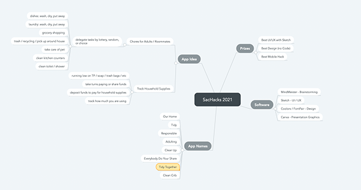
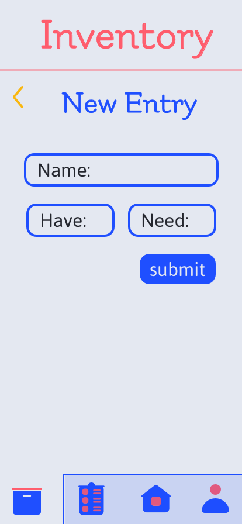
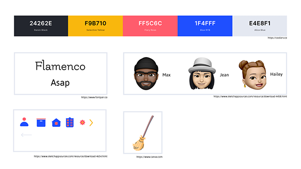
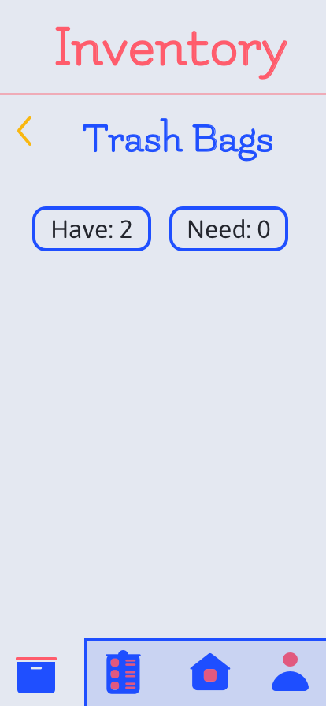
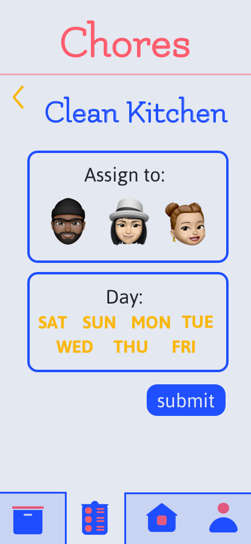
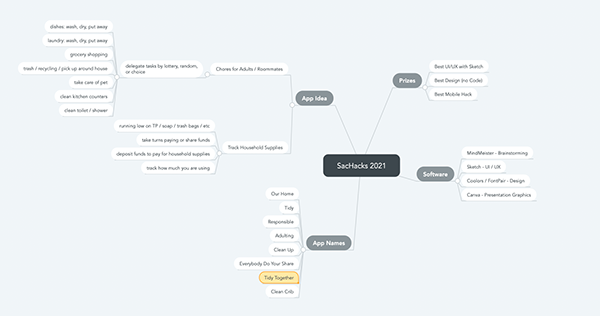